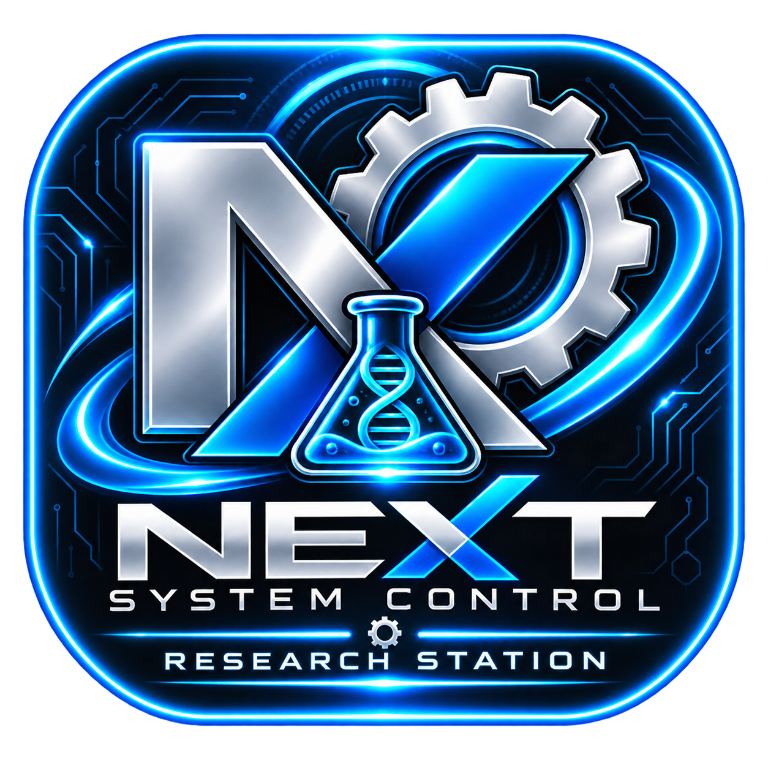
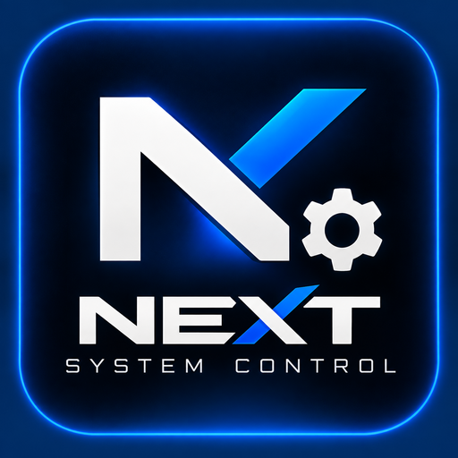
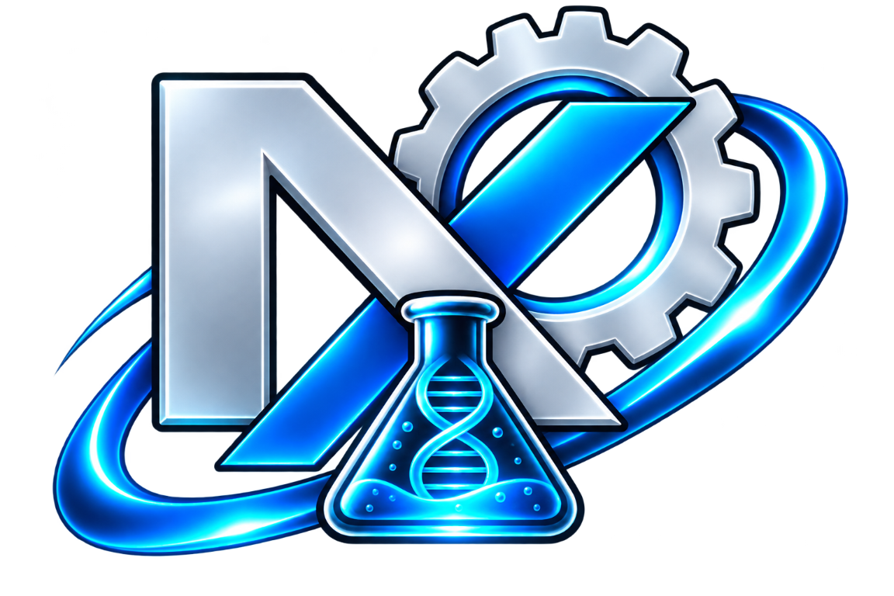

Read-only catalog command
The fixed tools command lists bounded registry metadata, including tool IDs, categories, mode requirements, implementation status, and declared capabilities. It does not activate or authorize tools.
The official public hub for NEXT System Control and NEXT Research Station. Download the latest releases, review release notes, and follow the development roadmap.

Beta 4 adds a fixed read-only Tool Registry command and bounded metadata for NEXT Research Station console snapshots. Snapshot capture requires the active paired session to match the selected console and pinned host fingerprint.
The fixed tools command lists bounded registry metadata, including tool IDs, categories, mode requirements, implementation status, and declared capabilities. It does not activate or authorize tools.
NEXT Research Station can collect the fixed Tool Registry listing as part of an explicitly requested console snapshot. Snapshot records store command status and output hashes rather than raw console output.
Capture requires the active paired session to match the selected endpoint and pinned host fingerprint. NEXT Research Station checks the identity before collection and before saving.
Registry metadata is descriptive only. It does not grant authorization, elevate privileges, start services, or make arbitrary shell execution available through NEXT Shell.
PS4 testing: the maintainer confirms this exact Beta 4 package was installed and tested on PS4.
Host and build checks: OpenOrbis ELF, FSELF, and package generation completed; the PC simulator suite passed 15/15 tests and NEXT Shell sanitizer tests passed.
Installation: Install the PKG with the PS4 package installer and launch NEXT System Control. The title ID is NEXT00053, matching Beta 3.
Enable SSH or FTP only when needed on a trusted local network. FTP is not TLS-encrypted; do not expose either service to the public internet.
Previous public release: v0.5.0 Beta 3.

PS4 · Beta 4Native PS4 application with read-only Tool Registry metadata and paired-console snapshot support through NEXT Research Station.

Windows x64 · Beta 1NEXT Research Station is distributed as one self-contained Windows x64 executable with the .NET runtime included. It provides explicit paired-console research, read-only snapshot history, diagnostics, and offline analysis.
Priorities are editorial; they are not completion percentages or proof that a feature is stable.
Authentication, command handling, stability testing, and useful diagnostics.
Service isolation, intentional access controls, and safer filesystem workflows.
Crash breadcrumbs, log viewers, reports, and reproducible test evidence.
Development source and internal review activity are private. Public release downloads remain available without signing in.
Find published beta versions, package downloads, checksums, and release notes.
Fixed read-only Tool Registry metadata and identity-bound NEXT Research Station console snapshots.
Launch/exit stability, SSH and FTP separation, predictable navigation, and actionable logs.
Guided versus expert modes, safe update delivery, terminal utilities, and database groundwork.
Read-only firmware research, boot-state observation, persistence feasibility, and recovery safeguards.
Roadmap items are subject to change. Experimental features should not be treated as release-ready.
Follow published updates and choose releases appropriate for your firmware. Development source, issues, and pull requests are private.